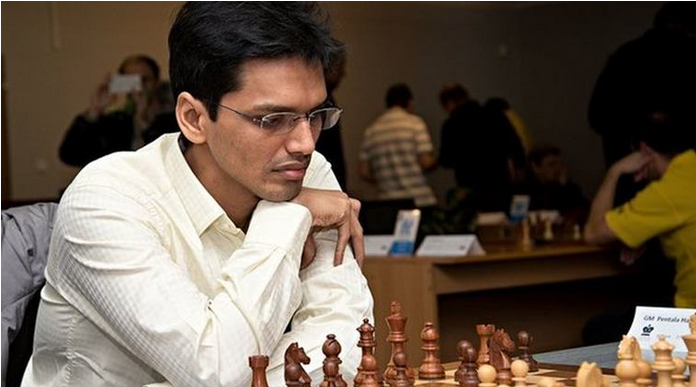
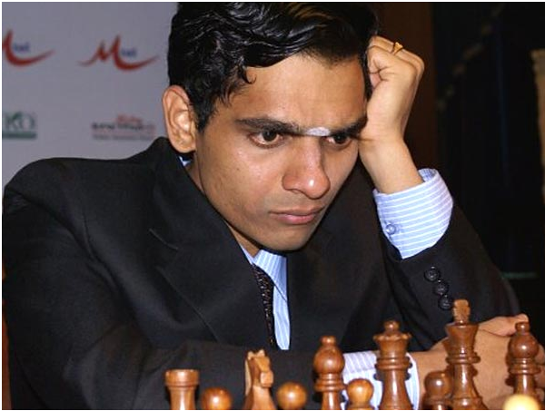
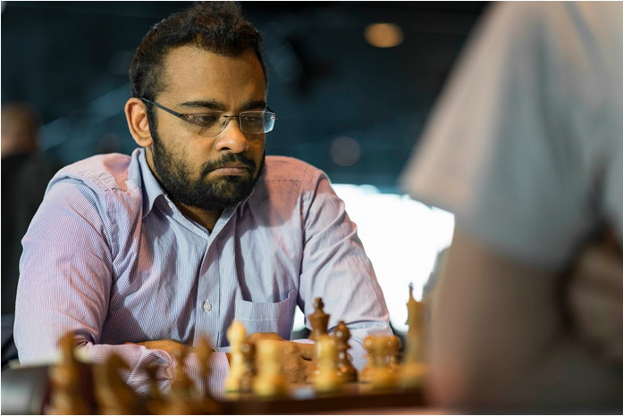

Here’s presenting the current top chess players from India Castling
Harikrishna Pentala
Born on 10th May 1986 in Guntur, Andhra Pradesh, Harikrishna became the youngest grandmaster from India in 2001.
Major achievements:
- In 2001 he became Commonwealth Champion.
- In 2004 he won World Junior Championship.
- In 2011 he won Asian Individual Championship.
- He represented India a total of 7 times at the Chess Olympiads during the period of 2000-2012
- Harikrishna clinched the Tata Steel Group B in 2012 and followed it the Biel MTO Masters Tournament Open event in 2013.
- He broke into the top ten players in the world in November 2016 with a FIDE rating of 2768.

Krishnan Sasikiran
Born on 7th January 1981, Sasikiran hails from Chennai, Tamil Nadu. He learnt chess from his father S. Krishnan at the very early age of 9.
Major achievements:
- Sasikiran won the Indian Chess Championship for the first time in 1999 and won it again in 2002, 2003 and 2013.
- In 1999 Sasikiran won the Asian Junior Chess Championship in Vietnam.
-
- Sasikiran completed the requirements for the Grandmaster title at the 2000 Commonwealth Championship at Sangli.
- Won the prestigious Hastings International Chess tournament.
- In 2006 Sasikiran won a gold medal in the 2006 Asian Games– team event
- At the 2014 Chess Olympiad he scored 7.5/10 points on board three to help the Indian team to win the bronze medal. Sasikiran also won the individual silver medal on board three.

Abhijeet Gupta
Next in the list of top chess players from India is Abhijeet Gupta. Born in Bhilwara, Rajasthan on 16th October,1989 Abhijeet is the first player to win the title of Commonwealth Chess Champion four times.
Major achievements:
- He earned his Grandmaster title in 2008.
- In 2013 Gupta won the Commonwealth Chess Championship.
- In 2015 he won the Commonwealth championship again and later that year the Hoogeveen Open.
